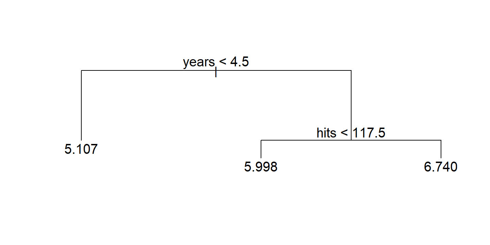
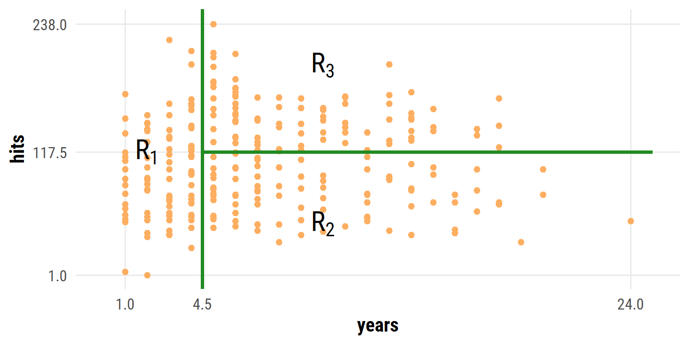
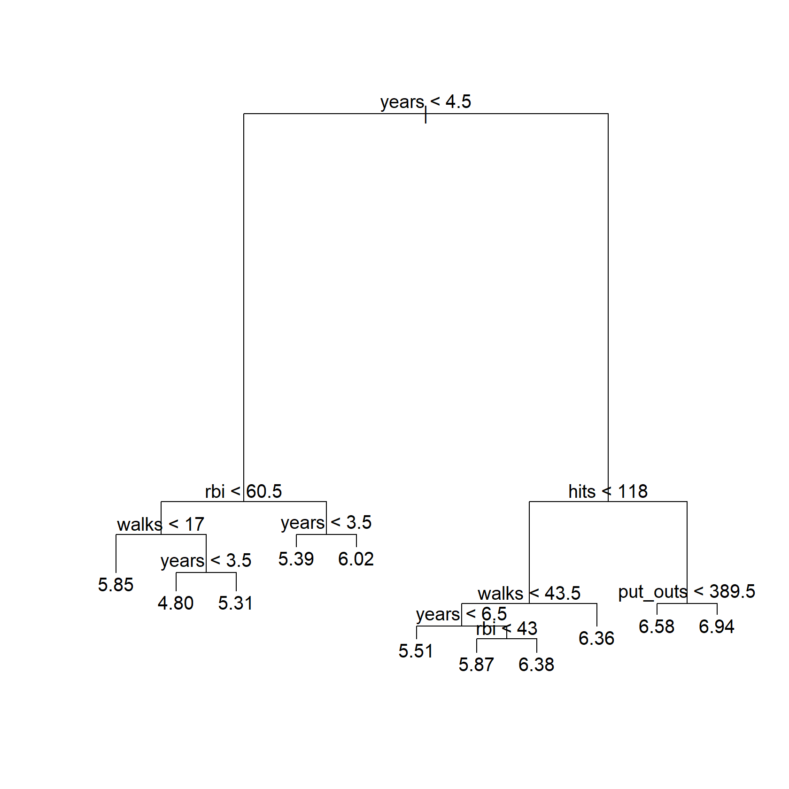
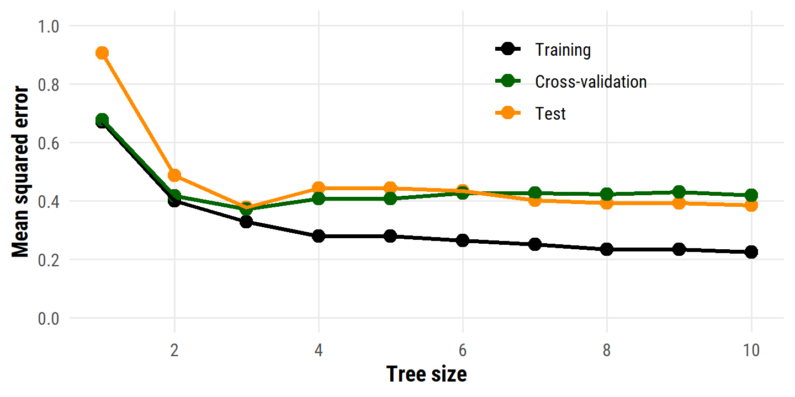
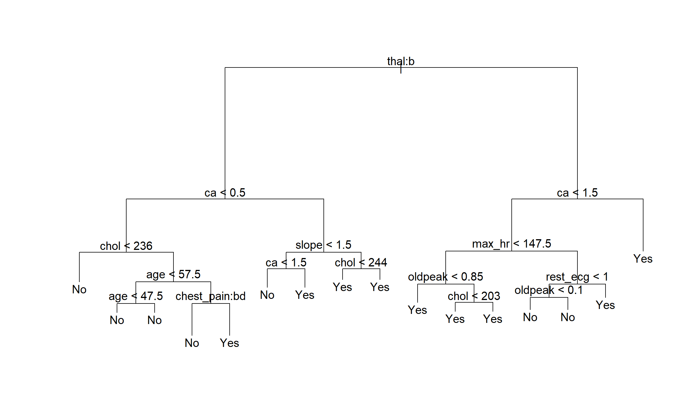
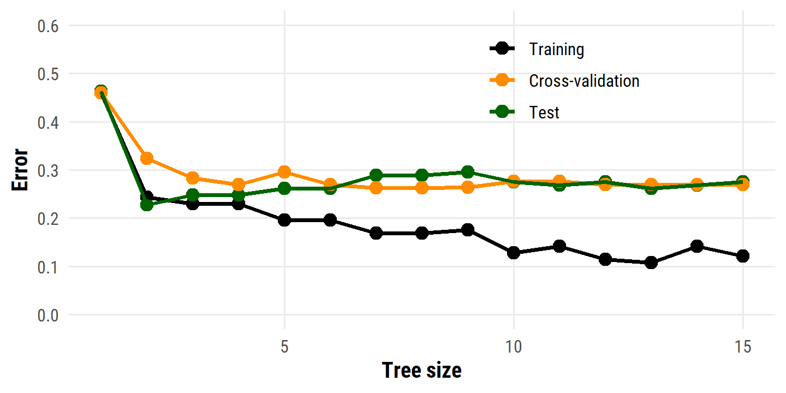
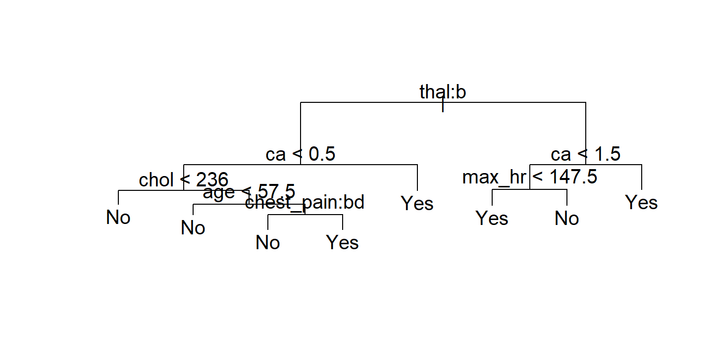
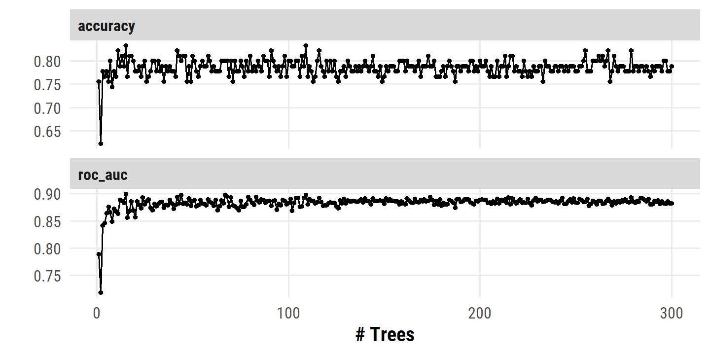

8 Tree-Based Methods
Load the usual packages:
library(tidyverse)
library(tidymodels)
library(broom)
library(gt)
library(patchwork)
library(tictoc)
# Load my R package and set the ggplot theme
library(dunnr)
extrafont::loadfonts(device = "win", quiet = TRUE)
theme_set(theme_td_minimal())
set_geom_fonts()
set_palette()Tree-based methods involve stratifying or segmenting the predictor space into a number of simple regions. Predictions are typically the mean or mode of the response value for training observations in a region. Since the set of splitting rules can be summarized in a tree, these types of approaches are known as decision tree methods.
Tree-based methods are simple and useful for interpretation. However, they typically are not competitive with the best supervised learning aproaches, such as those seen in Chapters 6 and 7, in terms of prediction accuracy. Hence in this chapter we also introduce bagging, random forests, boosting, and Bayesian additive regression trees. Each of these approaches involves producing multiple trees which are then combined to yield a single consensus prediction. We will see that combining a large number of trees can often result in dramatic improvements in prediction accuracy, at the expense of some loss in interpretation.
8.1 The Basics of Decision Trees
8.1.1 Regression Trees
Predicting Baseball Players’ Salaries Using Regression Trees
To motivate regression trees, we use an example of predicting a baseball player’s salary based on years (number of years played in the major leagues), and hits (number of hits made in the previous year).
hitters <- ISLR2::Hitters %>% janitor::clean_names()
# As per the text, we remove missing `salary` values and log-transform it
hitters <- hitters %>%
filter(!is.na(salary)) %>%
mutate(salary = log(salary))
glimpse(hitters)## Rows: 263
## Columns: 20
## $ at_bat <int> 315, 479, 496, 321, 594, 185, 298, 323, 401, 574, 202, 418,…
## $ hits <int> 81, 130, 141, 87, 169, 37, 73, 81, 92, 159, 53, 113, 60, 43…
## $ hm_run <int> 7, 18, 20, 10, 4, 1, 0, 6, 17, 21, 4, 13, 0, 7, 20, 2, 8, 1…
## $ runs <int> 24, 66, 65, 39, 74, 23, 24, 26, 49, 107, 31, 48, 30, 29, 89…
## $ rbi <int> 38, 72, 78, 42, 51, 8, 24, 32, 66, 75, 26, 61, 11, 27, 75, …
## $ walks <int> 39, 76, 37, 30, 35, 21, 7, 8, 65, 59, 27, 47, 22, 30, 73, 1…
## $ years <int> 14, 3, 11, 2, 11, 2, 3, 2, 13, 10, 9, 4, 6, 13, 15, 5, 8, 1…
## $ c_at_bat <int> 3449, 1624, 5628, 396, 4408, 214, 509, 341, 5206, 4631, 187…
## $ c_hits <int> 835, 457, 1575, 101, 1133, 42, 108, 86, 1332, 1300, 467, 39…
## $ c_hm_run <int> 69, 63, 225, 12, 19, 1, 0, 6, 253, 90, 15, 41, 4, 36, 177, …
## $ c_runs <int> 321, 224, 828, 48, 501, 30, 41, 32, 784, 702, 192, 205, 309…
## $ crbi <int> 414, 266, 838, 46, 336, 9, 37, 34, 890, 504, 186, 204, 103,…
## $ c_walks <int> 375, 263, 354, 33, 194, 24, 12, 8, 866, 488, 161, 203, 207,…
## $ league <fct> N, A, N, N, A, N, A, N, A, A, N, N, A, N, N, A, N, N, A, N,…
## $ division <fct> W, W, E, E, W, E, W, W, E, E, W, E, E, E, W, W, W, E, W, W,…
## $ put_outs <int> 632, 880, 200, 805, 282, 76, 121, 143, 0, 238, 304, 211, 12…
## $ assists <int> 43, 82, 11, 40, 421, 127, 283, 290, 0, 445, 45, 11, 151, 45…
## $ errors <int> 10, 14, 3, 4, 25, 7, 9, 19, 0, 22, 11, 7, 6, 8, 10, 16, 2, …
## $ salary <dbl> 6.163315, 6.173786, 6.214608, 4.516339, 6.620073, 4.248495,…
## $ new_league <fct> N, A, N, N, A, A, A, N, A, A, N, N, A, N, N, A, N, N, N, N,…I’ll start with the trees library for this example:
library(tree)
hitters_tree <- tree(salary ~ years + hits, data = hitters,
# In order to limit the tree to just two partitions,
# need to set the `control` option
control = tree.control(nrow(hitters), minsize = 100))Use the built-in plot() to visualize the tree in Figure 8.1:
plot(hitters_tree)
text(hitters_tree)
To work with the regions, there is no broom::tidy() method for tree objects, but I can get the cuts from the frame$splits object:
hitters_tree$frame$splits## cutleft cutright
## [1,] "<4.5" ">4.5"
## [2,] "" ""
## [3,] "<117.5" ">117.5"
## [4,] "" ""
## [5,] "" ""splits <- hitters_tree$frame$splits %>%
as_tibble() %>%
filter(cutleft != "") %>%
mutate(val = readr::parse_number(cutleft)) %>%
pull(val)
splits## [1] 4.5 117.5hitters %>%
ggplot(aes(x = years, y = hits)) +
geom_point(color = td_colors$nice$soft_orange) +
geom_vline(xintercept = splits[1], size = 1, color = "forestgreen") +
geom_segment(aes(x = splits[1], xend = 25, y = splits[2], yend = splits[2]),
size = 1, color = "forestgreen") +
annotate("text", x = 10, y = 50, label = "R[2]", size = 6, parse = TRUE) +
annotate("text", x = 10, y = 200, label = "R[3]", size = 6, parse = TRUE) +
annotate("text", x = 2, y = 118, label = "R[1]", size = 6, parse = TRUE) +
coord_cartesian(xlim = c(0, 25), ylim = c(0, 240)) +
scale_x_continuous(breaks = c(1, 4.5, 24)) +
scale_y_continuous(breaks = c(1, 117.5, 238))
Overall, the tree stratifies or segments the players into three regions of predictor space: players who have played for four or fewer years, players who have played for five or more years and who made fewer than 118 hits last year, and players who have played for five or more years and who made at least 118 hits last year.
The regions \(R_1\), \(R_2\), and \(R_3\) are known as terminal nodes or leaves of the tree. The splits along the way are referred to as internal nodes – the connections between nodes are called branches.
A key advantage of a simple decision tree like this is its ease of interpretation:
We might interpret the regression tree displayed in Figure 8.1 as follows:
Yearsis the most important factor in determiningSalary, and players with less experience earn lower salaries than more experienced players. Given that a player is less experienced, the number of hits that he made in the previous year seems to play little role in his salary. But among players who have been in the major leagues for five or more years, the number of hits made in the previous year does affect salary, and players who made more hits last year tend to have higher salaries.
Prediction via Stratification of the Feature Space
Roughly speaking, there are two steps in building a regression tree:
- Divide the predictor space into \(J\) distinct non-overlapping regions \(R_1, \dots, R_J\).
- For every observation that falls into the region \(R_j\), we make the same prediction: the mean of the response values of the training observations.
In theory, the regions could be any shape but we choose boxes for simplicity. The goal of step 1 is to find the boxes that minimize the RSS:
\[ \sum_{j=1}^J \sum_{i \in R_j} (y_i - \hat{y}_{R_j})^2. \]
Unfortunately, it is computationally infeasible to consider every possible partition of the feature space into \(J\) boxes. For this reason, we take a top-down, greedy approach that is known as recursive binary splitting. The approach is top-down because it begins at the top of the tree (at which point all observations belong to a single region) and then successively splits the predictor space; each split is indicated via two new branches further down on the tree. It is greedy because at each step of the tree-building process, the best split is made at that particular step, rather than looking ahead and picking a split that will lead to a better tree in some future step.
The first split is defined as a pair of half planes:
\[ R_1 (j,s) = \{X | X_j < s \} \text{ and } R_2 (j,s) = \{ X | X_j \geq s \}, \]
and we seek the values \(j\) and \(s\) that minimize
\[ \sum_{i: x_i \in R_1 (j,s)} (y_i - \hat{y}_{R_1})^2 + \sum_{i: x_i \in R_2 (j,s)} (y_i - \hat{y}_{R_2})^2. \]
Finding the values \(j\) and \(s\) to minimize the above RSS can be done quite quickly, especially when the number of features \(p\) is not too large.
The process is repeated – looking for the best predictor and best cutpoint in order to split the data further and minimize the RSS within the regions – except instead of splitting the entire predictor space, we split one of the previously identified regions. This results in three regions, which we again look to split. This continues until a stopping criterion is reached; for instance, we may continue until no region contains more than five observations.
Tree Pruning
The above process is likely to overfit the data, leading to poor test set performance. This is because the resulting tree might be too complex. A smaller tree with fewer splits/regions might lead to lower variance and better interpretation at the cost of higher bias. One way to control this is to only choose splits that exceed some high threshold of RSS reduction. This way is short-sighted however, because a seemingly worthless split early on might be followed by a great split.
Therefore, a better strategy is to grow a very large tree \(T_0\), and then prune it back in order to obtain a subtree. How do we determine the best way to prune the tree? Intuitively, our goal is to select a subtree that leads to the lowest test error rate. Given a subtree, we can estimate its test error using cross-validation or the validation set approach. However, estimating the cross-validation error for every possible subtree would be too cumbersome, since there is an extremely large number of possible subtrees. Instead, we need a way to select a small set of subtrees for consideration.
Cost complexity pruning — also known as weakest link pruning — gives us cost a way to do just this. Rather than considering every possible subtree, we consider a sequence of trees indexed by a nonnegative tuning parameter \(\alpha\). For each value of \(\alpha\) there corresponds a subtree \(T \subset T0\) such that
\[ \sum^{|T|}_{m=1} \sum_{x_i \in R_m} (y_i - \hat{y}_{R_m})^2 + \alpha |T| \]
is as small as possible. Here \(|T|\) indicates the number of terminal nodes of the tree \(T\), \(R_m\) is the rectangle (i.e. the subset of predictor space) corresponding to the \(m\)th terminal node, and \(\hat{y}_{R_m}\) is the predicted response associated with \(R_m\) – that is, the mean of the training observations in \(R_m\). The tuning parameter \(\alpha\) controls a trade-off between the subtree’s complexity and its fit to the training data. When \(\alpha = 0\), then the subtree \(T\) will simply equal \(T_0\), because then (8.4) just measures the training error. However, as \(\alpha\) increases, there is a price to pay for having a tree with many terminal nodes, and so the quantity (8.4) will tend to be minimized for a smaller subtree. Equation 8.4 is reminiscent of the lasso (6.7) from Chapter 6, in which a similar formulation was used in order to control the complexity of a linear model.
As \(\alpha\) is increased from zero, branches get pruned in a nested and predictable way, so obtaining the full sequence of subtrees as a function of \(\alpha\) is easy. The value of \(\alpha\) can then be selected using cross-validation or a validation set, which we then apply to the full data set to obtain the subtree.
The example with the hitters data first involves splitting the data into half training and half testing:
set.seed(-203)
hitters_split <- initial_split(hitters,
# Bumped up the prop to get 132 training observations
prop = 0.505)
hitters_train <- training(hitters_split)
hitters_test <- testing(hitters_split)
hitters_resamples <- vfold_cv(hitters_train, v = 6)Then fitting a decision tree with nine of the features, which aren’t specified so instead I’ll fit using the six features in Figure 8.4
hitters_train_tree <- tree(
salary ~ years + hits + rbi + put_outs + walks + runs,
data = hitters_train,
)
plot(hitters_train_tree)
text(hitters_train_tree, digits = 3)
This isn’t exactly the same tree as that in the text, as expected with a different random splitting and feature selection. I’ll do the same with each CV split:
hitters_resamples_tree <-
# Compile all of the analysis data sets from the six splits
map_dfr(hitters_resamples$splits, analysis, .id = "split") %>%
# For each split...
group_by(split) %>%
nest() %>%
mutate(
# ... fit a tree to the analysis set
tree_mod = map(
data,
~ tree(
salary ~ years + hits + rbi + put_outs + walks + runs,
data = .x,
)
)
)Next, we prune the large tree above from 3 terminal nodes down to 1.
For this, I’ll vary the best parameter in the prune.tree() function:
hitters_tree_pruned <-
tibble(n_terminal = 1:10) %>%
mutate(
train_tree_pruned = map(n_terminal,
~ prune.tree(hitters_train_tree, best = .x)),
)
hitters_tree_pruned## # A tibble: 10 × 2
## n_terminal train_tree_pruned
## <int> <list>
## 1 1 <singlend>
## 2 2 <tree>
## 3 3 <tree>
## 4 4 <tree>
## 5 5 <tree>
## 6 6 <tree>
## 7 7 <tree>
## 8 8 <tree>
## 9 9 <tree>
## 10 10 <tree>Note that, for n_terminal = 1, the object is singlend, not tree.
This makes sense – a single node can’t really be called a tree – but unfortunately it means that I can’t use the predict() function to calculate MSE later on.
Mathematically, a single node is just a prediction of the mean of the training set, so I will replace n_terminal = 1 with a lm model with just an intercept:
hitters_tree_pruned <- hitters_tree_pruned %>%
mutate(
train_tree_pruned = ifelse(
n_terminal == 1,
list(lm(salary ~ 1, data = hitters_train)),
train_tree_pruned
)
)Do the same for each CV split:
hitters_resamples_tree_pruned <- hitters_resamples_tree %>%
crossing(n_terminal = 1:10) %>%
mutate(
tree_pruned = map2(tree_mod, n_terminal,
~ prune.tree(.x, best = .y)),
# As above, replace the single node trees with lm
tree_pruned = ifelse(
n_terminal == 1,
map(data, ~ lm(salary ~ 1, data = .x)),
tree_pruned
)
)## Warning in prune.tree(.x, best = .y): best is bigger than tree size
## Warning in prune.tree(.x, best = .y): best is bigger than tree size
## Warning in prune.tree(.x, best = .y): best is bigger than tree sizeNote the warnings. This tells me that some of the models fit to the CV splits had 10 or fewer terminal nodes already, and so no pruning was performed.
Finally, I’ll compute the MSE for the different data sets. The training and testing sets:
# Simple helper function to compute mean squared error
calc_mse <- function(mod, data) {
mean((predict(mod, newdata = data) - data$salary)^2)
}
hitters_tree_pruned_mse <- hitters_tree_pruned %>%
mutate(
train_mse = map_dbl(
train_tree_pruned,
~ calc_mse(.x, hitters_train)
),
test_mse = map_dbl(
train_tree_pruned,
~ calc_mse(.x, hitters_test)
)
)
hitters_tree_pruned_mse## # A tibble: 10 × 4
## n_terminal train_tree_pruned train_mse test_mse
## <int> <list> <dbl> <dbl>
## 1 1 <lm> 0.671 0.906
## 2 2 <tree> 0.400 0.487
## 3 3 <tree> 0.329 0.377
## 4 4 <tree> 0.280 0.443
## 5 5 <tree> 0.280 0.443
## 6 6 <tree> 0.264 0.433
## 7 7 <tree> 0.252 0.401
## 8 8 <tree> 0.233 0.393
## 9 9 <tree> 0.233 0.393
## 10 10 <tree> 0.225 0.385And the CV splits:
hitters_resamples_tree_pruned_mse <- hitters_resamples_tree_pruned %>%
select(split, n_terminal, tree_pruned) %>%
left_join(
map_dfr(hitters_resamples$splits, assessment, .id = "split") %>%
group_by(split) %>%
nest() %>%
rename(assessment_data = data),
by = "split"
) %>%
mutate(
cv_mse = map2_dbl(
tree_pruned, assessment_data,
~ calc_mse(.x, .y)
)
) %>%
group_by(n_terminal) %>%
summarise(cv_mse = mean(cv_mse), .groups = "drop")Finally, put it all together as in Figure 8.5 (without standard error bars):
hitters_tree_pruned_mse %>%
select(-train_tree_pruned) %>%
left_join(hitters_resamples_tree_pruned_mse, by = "n_terminal") %>%
pivot_longer(cols = c(train_mse, test_mse, cv_mse), names_to = "data_set") %>%
mutate(
data_set = factor(data_set,
levels = c("train_mse", "cv_mse", "test_mse"),
labels = c("Training", "Cross-validation", "Test"))
) %>%
ggplot(aes(x = n_terminal, y = value, color = data_set)) +
geom_point(size = 3) +
geom_line(size = 1) +
scale_y_continuous("Mean squared error", breaks = seq(0, 1.0, 0.2)) +
expand_limits(y = c(0, 1.0)) +
scale_x_continuous("Tree size", breaks = seq(2, 10, 2)) +
scale_color_manual(NULL, values = c("black", "darkgreen", "darkorange")) +
theme(legend.position = c(0.7, 0.8))
As in the text, the minimum test and CV MSE correspond to the decision trees with three terminal nodes.
8.1.2 Classification Trees
A classification tree is used for a qualitative response. An observation is predicted to belong to the most commonly occurring class of training observations in its region. Often, we are not only interested in the predicted class for the terminal nodes, but also the class proportions among the training observations.
Just as in the regression setting, we use recursive binary splitting to grow a classification tree. Instead of RSS, the natural alternative is the classification error rate. For a given region, this is simply the fraction of training observations in that region that do not belong to the most common class:
\[ E = 1 - \underset{k}{\text{max}} (\hat{p}_{mk}) \]
where \(\hat{p}_{mk}\) represents the proportion of training observations in the \(m\)th region that are from the \(k\)th class.
It turns out the classification error is not sufficiently sensitive for tree-growing. In practice, two other measures are preferable.
The Gini index is defined as:
\[ G = \sum_{k=1}^K \hat{p}_{mk} (1 - \hat{p}_{mk}). \]
It measures total variance across all \(K\) classes, taking on a small value if all \(\hat{p}_{mk}\)’s are close to 0 or 1. For this reason, the Gini index is referred to as a measure of node purity, in that a small value indicates that a node contains predominantly observations from a single class.
An alternative is the entropy:
\[ D = - \sum_{k=1}^K \hat{p}_{mk} \log \hat{p}_{mk}. \]
Like the Gini index, the entropy will take on a small value (\(\geq 0\)) for pure nodes.
A tree is typically pruned by evaluating split quality with Gini index or entropy, through the classification error rate is preferable if prediction accuracy of the final pruned tree is the goal.
The heart data is not available in the ISLR2 package, so I downloaded the CSV:
heart <- read_csv("data/Heart.csv", show_col_types = FALSE) %>%
# Drop the row number column
select(-`...1`) %>%
janitor::clean_names() %>%
# It is not clear what they do with the missing values in the text,
# I'll drop drop the observations for now
drop_na() %>%
# In order to use categorical variables with `tree::tree()`, need to convert
# character to factor
mutate(across(where(is.character), factor))
glimpse(heart)## Rows: 297
## Columns: 14
## $ age <dbl> 63, 67, 67, 37, 41, 56, 62, 57, 63, 53, 57, 56, 56, 44, 52,…
## $ sex <dbl> 1, 1, 1, 1, 0, 1, 0, 0, 1, 1, 1, 0, 1, 1, 1, 1, 1, 1, 0, 1,…
## $ chest_pain <fct> typical, asymptomatic, asymptomatic, nonanginal, nontypical…
## $ rest_bp <dbl> 145, 160, 120, 130, 130, 120, 140, 120, 130, 140, 140, 140,…
## $ chol <dbl> 233, 286, 229, 250, 204, 236, 268, 354, 254, 203, 192, 294,…
## $ fbs <dbl> 1, 0, 0, 0, 0, 0, 0, 0, 0, 1, 0, 0, 1, 0, 1, 0, 0, 0, 0, 0,…
## $ rest_ecg <dbl> 2, 2, 2, 0, 2, 0, 2, 0, 2, 2, 0, 2, 2, 0, 0, 0, 0, 0, 0, 0,…
## $ max_hr <dbl> 150, 108, 129, 187, 172, 178, 160, 163, 147, 155, 148, 153,…
## $ ex_ang <dbl> 0, 1, 1, 0, 0, 0, 0, 1, 0, 1, 0, 0, 1, 0, 0, 0, 0, 0, 0, 0,…
## $ oldpeak <dbl> 2.3, 1.5, 2.6, 3.5, 1.4, 0.8, 3.6, 0.6, 1.4, 3.1, 0.4, 1.3,…
## $ slope <dbl> 3, 2, 2, 3, 1, 1, 3, 1, 2, 3, 2, 2, 2, 1, 1, 1, 3, 1, 1, 1,…
## $ ca <dbl> 0, 3, 2, 0, 0, 0, 2, 0, 1, 0, 0, 0, 1, 0, 0, 0, 0, 0, 0, 0,…
## $ thal <fct> fixed, normal, reversable, normal, normal, normal, normal, …
## $ ahd <fct> No, Yes, Yes, No, No, No, Yes, No, Yes, Yes, No, No, Yes, N…set.seed(993)
heart_splits <- initial_split(heart, prop = 0.5)
heart_train <- training(heart_splits)
heart_test <- testing(heart_splits)
heart_resamples <- vfold_cv(heart_train, v = 5)
heart_train_tree <- tree(ahd ~ ., data = heart_train)
plot(heart_train_tree)
text(heart_train_tree)
This resulted in a 16 size tree, a little smaller than that in the text.
To reproduce the plot of error versus tree size, I’ll re-use a lot of the code from section 8.1.1:
# Fit the CV splits
heart_resamples_tree <-
map_dfr(heart_resamples$splits, analysis, .id = "split") %>%
group_by(split) %>%
nest() %>%
mutate(
tree_mod = map(data, ~ tree(ahd ~ ., data = .x))
)
# Prune the tree fit to the training data
heart_tree_pruned <-
tibble(n_terminal = 1:15) %>%
mutate(
train_tree_pruned = map(n_terminal,
~ prune.tree(heart_train_tree, best = .x)),
# Need to use logistic regression for single node tree models
train_tree_pruned = ifelse(
n_terminal == 1,
list(glm(ahd ~ 1, data = heart_train, family = binomial)),
train_tree_pruned
)
)
# Prune the tree from the CV splits
heart_resamples_tree_pruned <- heart_resamples_tree %>%
crossing(n_terminal = 1:15) %>%
mutate(
tree_pruned = map2(tree_mod, n_terminal,
~ prune.tree(.x, best = .y)),
# As above, replace the single node trees with glm
tree_pruned = ifelse(
n_terminal == 1,
map(data, ~ glm(ahd ~ 1, data = .x, family = binomial)),
tree_pruned
)
)
# A helper function to calculate classification error from tree or glm models
calc_class_error <- function(mod, data) {
if (class(mod)[1] == "tree") {
preds <- predict(mod, type = "class", newdata = data)
} else {
preds <- predict(mod, type = "response", newdata = data)
preds <- ifelse(preds > 0.5, "Yes", "No") %>%
factor(levels = c("No", "Yes"))
}
1 - mean(preds == data$ahd)
}
# Calculate error on the training and testing sets
heart_tree_pruned_error <- heart_tree_pruned %>%
mutate(
train_error = map_dbl(
train_tree_pruned,
~ calc_class_error(.x, heart_train)
),
test_error = map_dbl(
train_tree_pruned,
~ calc_class_error(.x, heart_test)
)
)
# And the CV assessment data
heart_resamples_tree_pruned_error <- heart_resamples_tree_pruned %>%
select(split, n_terminal, tree_pruned) %>%
left_join(
map_dfr(heart_resamples$splits, assessment, .id = "split") %>%
group_by(split) %>%
nest() %>%
rename(assessment_data = data),
by = "split"
) %>%
mutate(
cv_error = map2_dbl(
tree_pruned, assessment_data,
~ calc_class_error(.x, .y)
)
) %>%
group_by(n_terminal) %>%
summarise(cv_error = mean(cv_error), .groups = "drop")
heart_tree_pruned_error %>%
select(-train_tree_pruned) %>%
left_join(heart_resamples_tree_pruned_error, by = "n_terminal") %>%
pivot_longer(cols = c(train_error, test_error, cv_error),
names_to = "data_set") %>%
mutate(
data_set = factor(data_set,
levels = c("train_error", "cv_error", "test_error"),
labels = c("Training", "Cross-validation", "Test"))
) %>%
ggplot(aes(x = n_terminal, y = value, color = data_set)) +
geom_point(size = 3) +
geom_line(size = 1) +
scale_y_continuous("Error", breaks = seq(0, 0.6, 0.1)) +
expand_limits(y = c(0, 0.6)) +
scale_x_continuous("Tree size", breaks = c(5, 10, 15)) +
scale_color_manual(NULL, values = c("black", "darkorange", "darkgreen")) +
theme(legend.position = c(0.7, 0.8))
The best model by CV error here has 7 or 8 terminal nodes. Visualize the pruned tree with 7 terminal nodes:
heart_best_model_cv <- heart_resamples_tree_pruned_error %>%
filter(cv_error == min(cv_error)) %>%
pull(n_terminal) %>% min()
heart_best_model <- heart_tree_pruned %>%
filter(n_terminal == heart_best_model_cv) %>%
pull(train_tree_pruned)
plot(heart_best_model[[1]])
text(heart_best_model[[1]])
8.1.3 Trees Versus Linear Models
Regression and classification trees have a very different flavor from the more classical approaches for regression and classification like linear regression.
Which model is better? It depends on the problem at hand. If the relationship between the features and the response is well approximated by a linear model as in (8.8), then an approach such as linear regression will likely work well, and will outperform a method such as a regression tree that does not exploit this linear structure. If instead there is a highly non-linear and complex relationship between the features and the response as indicated by model (8.9), then decision trees may outperform classical approaches. An illustrative example is displayed in Figure 8.7. The relative performances of tree-based and classical approaches can be assessed by estimating the test error, using either cross-validation or the validation set approach (Chapter 5).
Of course, other considerations beyond simply test error may come into play in selecting a statistical learning method; for instance, in certain settings, prediction using a tree may be preferred for the sake of interpretability and visualization.
8.1.4 Advantages and Disadvantages of Trees
Advantages:
- Trees are very easy to explain.
- Decision trees more closely mirror human decision-making.
- Trees can be displayed graphically, and can be easily interpreted.
- Trees can easily handle qualitative predictors without the need to create dummy variables.
Disadvantages:
- Trees generally do not have the same level of predictive accuracy as some of the other regression and classification approaches.
- Trees can be very non-robust, i.e. a small change in the data can cause a large change in the final estimated tree.
However, by aggregating many decision trees, using methods like bagging, random forests, and boosting, the predictive performance of trees can be substantially improved.
8.2 Bagging, Random Forests, Boosting, and Bayesian Additive Regression Trees
An ensemble method is an approach that combines many simple “building block” models in order to obtain a single and potentially very powerful model. These simple building block models are sometimes known as weak learners, since they may lead to mediocre predictions on their own. We will now discuss bagging, random forests, boosting, and Bayesian additive regression trees. These are ensemble methods for which the simple building block is a regression or a classification tree.
8.2.1 Bagging
The bootstrap was introduced in Chapter 5 to estimate standard deviations of quantities of interest. Here, we see that it may be used to improve statistical learning methods such as decision trees.
The decision tree method suffers from high variance, in that it is highly dependent on the split of the training data. Bootstrap aggregation or bagging is a general-purpose procedure for reducing the variance of a statistical learning method.
Recall that a set of \(n\) observations each with variance \(\sigma^2\) has variance \(\sigma^2/n\). In other words, averaging a set of observations reduces variance. That is the idea behind bagging: take many (\(B\)) training sets from the population, build a separate prediction model (\(\hat{f}^b (x)\)) for each set, and average the resulting predictions:
\[ \hat{f}_{\text{avg}}(x) = \frac{1}{B} \sum_{b=1}^B \hat{f}^b (x). \]
Of course, we generally do not have access to multiple training sets, so we instead bootstrap the training data to obtain models \(\hat{f}^{*b}(x)\) and take the average:
\[ \hat{f}_{\text{bag}}(x) = \frac{1}{B} \sum_{b=1}^B \hat{f}^{*b} (x). \]
In the context of decision trees, this involves constructing \(B\) regression or classification trees. These trees are grown deep and not pruned, so each tree has high variance and low bias. By averaging the trees, we reduce the variance.
For re-creating the example in Figure 8.8, I’ll use the tidymodels framework.
After some time reading the parnsip documentation, I found out from Emil Hvitfeldt ’s ISLR labs code that a bagging model is the same as a random forest model with mtry equal to the number of predictors:
# The `.cols()` helper is new to me. Within the context of a parsnip
# specification, it returns the number of predictor columns. There are some
# other functions, like `.obs()` for rows
bagging_spec <- rand_forest(mtry = .cols(), trees = tune()) %>%
# Setting `importance = TRUE` for variable importance analysis later
set_engine("ranger", importance = "permutation") %>%
set_mode("classification")
# From 1 to 300 trees
trees_grid <- grid_regular(trees(range = c(1, 300)), levels = 300)heart_validation_split <- validation_split(heart, prop = 0.7)
heart_recipe <- recipe(ahd ~ ., data = heart)
heart_bagging_workflow <- workflow() %>%
add_model(bagging_spec) %>%
add_recipe(heart_recipe)
heart_bagging_tune <- tune_grid(
heart_bagging_workflow,
resamples = heart_validation_split, grid = trees_grid
)autoplot(heart_bagging_tune)
Reproducibility
Sys.time()## [1] "2022-09-18 23:36:37 AST"if ("git2r" %in% installed.packages()) {
if (git2r::in_repository()) {
git2r::repository()
}
}## Local: main C:/Users/tdunn/Documents/learning/islr-tidy
## Remote: main @ origin (https://github.com/taylordunn/islr-tidy)
## Head: [20e7bfa] 2022-09-18: Trying out some simulationsessioninfo::session_info()## ─ Session info ───────────────────────────────────────────────────────────────
## setting value
## version R version 4.2.1 (2022-06-23 ucrt)
## os Windows 10 x64 (build 19044)
## system x86_64, mingw32
## ui RTerm
## language (EN)
## collate English_Canada.utf8
## ctype English_Canada.utf8
## tz America/Curacao
## date 2022-09-18
## pandoc 2.18 @ C:/Program Files/RStudio/bin/quarto/bin/tools/ (via rmarkdown)
##
## ─ Packages ───────────────────────────────────────────────────────────────────
## package * version date (UTC) lib source
## abind 1.4-5 2016-07-21 [1] CRAN (R 4.2.0)
## assertthat 0.2.1 2019-03-21 [1] CRAN (R 4.2.1)
## backports 1.4.1 2021-12-13 [1] CRAN (R 4.2.0)
## base64enc 0.1-3 2015-07-28 [1] CRAN (R 4.2.0)
## bayestestR 0.12.1 2022-05-02 [1] CRAN (R 4.2.1)
## BiocParallel 1.30.3 2022-06-07 [1] Bioconductor
## bit 4.0.4 2020-08-04 [1] CRAN (R 4.2.1)
## bit64 4.0.5 2020-08-30 [1] CRAN (R 4.2.1)
## bookdown 0.27 2022-06-14 [1] CRAN (R 4.2.1)
## boot 1.3-28 2021-05-03 [2] CRAN (R 4.2.1)
## broom * 1.0.0 2022-07-01 [1] CRAN (R 4.2.1)
## bslib 0.4.0 2022-07-16 [1] CRAN (R 4.2.1)
## cachem 1.0.6 2021-08-19 [1] CRAN (R 4.2.1)
## car 3.1-0 2022-06-15 [1] CRAN (R 4.2.1)
## carData 3.0-5 2022-01-06 [1] CRAN (R 4.2.1)
## cellranger 1.1.0 2016-07-27 [1] CRAN (R 4.2.1)
## checkmate 2.1.0 2022-04-21 [1] CRAN (R 4.2.1)
## class 7.3-20 2022-01-16 [2] CRAN (R 4.2.1)
## cli 3.3.0 2022-04-25 [1] CRAN (R 4.2.1)
## codetools 0.2-18 2020-11-04 [2] CRAN (R 4.2.1)
## colorspace 2.0-3 2022-02-21 [1] CRAN (R 4.2.1)
## combinat 0.0-8 2012-10-29 [1] CRAN (R 4.2.0)
## conflicted 1.1.0 2021-11-26 [1] CRAN (R 4.2.1)
## corpcor 1.6.10 2021-09-16 [1] CRAN (R 4.2.0)
## corrr * 0.4.4 2022-08-16 [1] CRAN (R 4.2.1)
## crayon 1.5.1 2022-03-26 [1] CRAN (R 4.2.1)
## datawizard 0.4.1 2022-05-16 [1] CRAN (R 4.2.1)
## DBI 1.1.3 2022-06-18 [1] CRAN (R 4.2.1)
## dbplyr 2.2.1 2022-06-27 [1] CRAN (R 4.2.1)
## dials * 1.0.0 2022-06-14 [1] CRAN (R 4.2.1)
## DiceDesign 1.9 2021-02-13 [1] CRAN (R 4.2.1)
## digest 0.6.29 2021-12-01 [1] CRAN (R 4.2.1)
## discrim * 1.0.0 2022-06-23 [1] CRAN (R 4.2.1)
## distill 1.4 2022-05-12 [1] CRAN (R 4.2.1)
## distributional 0.3.0 2022-01-05 [1] CRAN (R 4.2.1)
## doParallel * 1.0.17 2022-02-07 [1] CRAN (R 4.2.1)
## downlit 0.4.2 2022-07-05 [1] CRAN (R 4.2.1)
## dplyr * 1.0.9 2022-04-28 [1] CRAN (R 4.2.1)
## dunnr * 0.2.6 2022-08-07 [1] Github (taylordunn/dunnr@e2a8213)
## ellipse 0.4.3 2022-05-31 [1] CRAN (R 4.2.1)
## ellipsis 0.3.2 2021-04-29 [1] CRAN (R 4.2.1)
## equatiomatic 0.3.1 2022-01-30 [1] CRAN (R 4.2.1)
## evaluate 0.15 2022-02-18 [1] CRAN (R 4.2.1)
## extrafont 0.18 2022-04-12 [1] CRAN (R 4.2.0)
## extrafontdb 1.0 2012-06-11 [1] CRAN (R 4.2.0)
## fansi 1.0.3 2022-03-24 [1] CRAN (R 4.2.1)
## farver 2.1.1 2022-07-06 [1] CRAN (R 4.2.1)
## fastmap 1.1.0 2021-01-25 [1] CRAN (R 4.2.1)
## forcats * 0.5.1 2021-01-27 [1] CRAN (R 4.2.1)
## foreach * 1.5.2 2022-02-02 [1] CRAN (R 4.2.1)
## fs 1.5.2 2021-12-08 [1] CRAN (R 4.2.1)
## furrr 0.3.0 2022-05-04 [1] CRAN (R 4.2.1)
## future 1.27.0 2022-07-22 [1] CRAN (R 4.2.1)
## future.apply 1.9.0 2022-04-25 [1] CRAN (R 4.2.1)
## gargle 1.2.0 2021-07-02 [1] CRAN (R 4.2.1)
## generics 0.1.3 2022-07-05 [1] CRAN (R 4.2.1)
## GGally 2.1.2 2021-06-21 [1] CRAN (R 4.2.1)
## ggdist * 3.2.0 2022-07-19 [1] CRAN (R 4.2.1)
## ggplot2 * 3.3.6 2022-05-03 [1] CRAN (R 4.2.1)
## ggrepel 0.9.1 2021-01-15 [1] CRAN (R 4.2.1)
## git2r 0.30.1 2022-03-16 [1] CRAN (R 4.2.1)
## glmnet * 4.1-4 2022-04-15 [1] CRAN (R 4.2.1)
## globals 0.15.1 2022-06-24 [1] CRAN (R 4.2.1)
## glue 1.6.2 2022-02-24 [1] CRAN (R 4.2.1)
## googledrive 2.0.0 2021-07-08 [1] CRAN (R 4.2.1)
## googlesheets4 1.0.0 2021-07-21 [1] CRAN (R 4.2.1)
## gower 1.0.0 2022-02-03 [1] CRAN (R 4.2.0)
## GPfit 1.0-8 2019-02-08 [1] CRAN (R 4.2.1)
## gridExtra 2.3 2017-09-09 [1] CRAN (R 4.2.1)
## gt * 0.6.0 2022-05-24 [1] CRAN (R 4.2.1)
## gtable 0.3.0 2019-03-25 [1] CRAN (R 4.2.1)
## hardhat 1.2.0 2022-06-30 [1] CRAN (R 4.2.1)
## haven 2.5.0 2022-04-15 [1] CRAN (R 4.2.1)
## here * 1.0.1 2020-12-13 [1] CRAN (R 4.2.1)
## highr 0.9 2021-04-16 [1] CRAN (R 4.2.1)
## hms 1.1.1 2021-09-26 [1] CRAN (R 4.2.1)
## htmltools 0.5.2 2021-08-25 [1] CRAN (R 4.2.1)
## httpuv 1.6.5 2022-01-05 [1] CRAN (R 4.2.1)
## httr 1.4.3 2022-05-04 [1] CRAN (R 4.2.1)
## igraph 1.3.4 2022-07-19 [1] CRAN (R 4.2.1)
## infer * 1.0.2 2022-06-10 [1] CRAN (R 4.2.1)
## insight 0.18.0 2022-07-05 [1] CRAN (R 4.2.1)
## ipred 0.9-13 2022-06-02 [1] CRAN (R 4.2.1)
## ISLR2 * 1.3-1 2022-01-10 [1] CRAN (R 4.2.1)
## iterators * 1.0.14 2022-02-05 [1] CRAN (R 4.2.1)
## janitor 2.1.0 2021-01-05 [1] CRAN (R 4.2.1)
## jquerylib 0.1.4 2021-04-26 [1] CRAN (R 4.2.1)
## jsonlite 1.8.0 2022-02-22 [1] CRAN (R 4.2.1)
## kknn 1.3.1 2016-03-26 [1] CRAN (R 4.2.1)
## klaR 1.7-1 2022-06-27 [1] CRAN (R 4.2.1)
## knitr 1.39 2022-04-26 [1] CRAN (R 4.2.1)
## labeling 0.4.2 2020-10-20 [1] CRAN (R 4.2.0)
## labelled 2.9.1 2022-05-05 [1] CRAN (R 4.2.1)
## later 1.3.0 2021-08-18 [1] CRAN (R 4.2.1)
## lattice 0.20-45 2021-09-22 [2] CRAN (R 4.2.1)
## lava 1.6.10 2021-09-02 [1] CRAN (R 4.2.1)
## leaps * 3.1 2020-01-16 [1] CRAN (R 4.2.1)
## lhs 1.1.5 2022-03-22 [1] CRAN (R 4.2.1)
## lifecycle 1.0.1 2021-09-24 [1] CRAN (R 4.2.1)
## listenv 0.8.0 2019-12-05 [1] CRAN (R 4.2.1)
## lubridate 1.8.0 2021-10-07 [1] CRAN (R 4.2.1)
## magrittr 2.0.3 2022-03-30 [1] CRAN (R 4.2.1)
## MASS 7.3-57 2022-04-22 [2] CRAN (R 4.2.1)
## Matrix * 1.4-1 2022-03-23 [2] CRAN (R 4.2.1)
## matrixStats 0.62.0 2022-04-19 [1] CRAN (R 4.2.1)
## memoise 2.0.1 2021-11-26 [1] CRAN (R 4.2.1)
## MetBrewer 0.2.0 2022-03-21 [1] CRAN (R 4.2.1)
## mgcv * 1.8-40 2022-03-29 [2] CRAN (R 4.2.1)
## mime 0.12 2021-09-28 [1] CRAN (R 4.2.0)
## miniUI 0.1.1.1 2018-05-18 [1] CRAN (R 4.2.1)
## mixOmics 6.20.0 2022-04-26 [1] Bioconductor (R 4.2.0)
## modeldata * 1.0.0 2022-07-01 [1] CRAN (R 4.2.1)
## modelr 0.1.8 2020-05-19 [1] CRAN (R 4.2.1)
## munsell 0.5.0 2018-06-12 [1] CRAN (R 4.2.1)
## mvtnorm * 1.1-3 2021-10-08 [1] CRAN (R 4.2.0)
## nlme * 3.1-157 2022-03-25 [2] CRAN (R 4.2.1)
## nnet 7.3-17 2022-01-16 [2] CRAN (R 4.2.1)
## parallelly 1.32.1 2022-07-21 [1] CRAN (R 4.2.1)
## parsnip * 1.0.0 2022-06-16 [1] CRAN (R 4.2.1)
## patchwork * 1.1.1 2020-12-17 [1] CRAN (R 4.2.1)
## performance 0.9.1 2022-06-20 [1] CRAN (R 4.2.1)
## pillar 1.8.0 2022-07-18 [1] CRAN (R 4.2.1)
## pkgconfig 2.0.3 2019-09-22 [1] CRAN (R 4.2.1)
## pls * 2.8-1 2022-07-16 [1] CRAN (R 4.2.1)
## plyr 1.8.7 2022-03-24 [1] CRAN (R 4.2.1)
## poissonreg * 1.0.0 2022-06-15 [1] CRAN (R 4.2.1)
## prodlim 2019.11.13 2019-11-17 [1] CRAN (R 4.2.1)
## promises 1.2.0.1 2021-02-11 [1] CRAN (R 4.2.1)
## purrr * 0.3.4 2020-04-17 [1] CRAN (R 4.2.1)
## questionr 0.7.7 2022-01-31 [1] CRAN (R 4.2.1)
## R6 2.5.1 2021-08-19 [1] CRAN (R 4.2.1)
## ranger 0.14.1 2022-06-18 [1] CRAN (R 4.2.1)
## rARPACK 0.11-0 2016-03-10 [1] CRAN (R 4.2.1)
## RColorBrewer 1.1-3 2022-04-03 [1] CRAN (R 4.2.0)
## Rcpp 1.0.9 2022-07-08 [1] CRAN (R 4.2.1)
## readr * 2.1.2 2022-01-30 [1] CRAN (R 4.2.1)
## readxl 1.4.0 2022-03-28 [1] CRAN (R 4.2.1)
## recipes * 1.0.1 2022-07-07 [1] CRAN (R 4.2.1)
## repr 1.1.4 2022-01-04 [1] CRAN (R 4.2.1)
## reprex 2.0.1 2021-08-05 [1] CRAN (R 4.2.1)
## reshape 0.8.9 2022-04-12 [1] CRAN (R 4.2.1)
## reshape2 1.4.4 2020-04-09 [1] CRAN (R 4.2.1)
## rlang 1.0.4 2022-07-12 [1] CRAN (R 4.2.1)
## rmarkdown 2.14 2022-04-25 [1] CRAN (R 4.2.1)
## rpart 4.1.16 2022-01-24 [2] CRAN (R 4.2.1)
## rprojroot 2.0.3 2022-04-02 [1] CRAN (R 4.2.1)
## rsample * 1.1.0 2022-08-08 [1] CRAN (R 4.2.1)
## RSpectra 0.16-1 2022-04-24 [1] CRAN (R 4.2.1)
## rstudioapi 0.13 2020-11-12 [1] CRAN (R 4.2.1)
## Rttf2pt1 1.3.8 2020-01-10 [1] CRAN (R 4.2.1)
## rvest 1.0.2 2021-10-16 [1] CRAN (R 4.2.1)
## sass 0.4.2 2022-07-16 [1] CRAN (R 4.2.1)
## scales * 1.2.0 2022-04-13 [1] CRAN (R 4.2.1)
## see 0.7.1 2022-06-20 [1] CRAN (R 4.2.1)
## sessioninfo 1.2.2 2021-12-06 [1] CRAN (R 4.2.1)
## shape 1.4.6 2021-05-19 [1] CRAN (R 4.2.0)
## shiny 1.7.2 2022-07-19 [1] CRAN (R 4.2.1)
## skimr 2.1.4 2022-04-15 [1] CRAN (R 4.2.1)
## snakecase 0.11.0 2019-05-25 [1] CRAN (R 4.2.1)
## stringi 1.7.8 2022-07-11 [1] CRAN (R 4.2.1)
## stringr * 1.4.0 2019-02-10 [1] CRAN (R 4.2.1)
## survival 3.3-1 2022-03-03 [2] CRAN (R 4.2.1)
## tibble * 3.1.8 2022-07-22 [1] CRAN (R 4.2.1)
## tictoc * 1.0.1 2021-04-19 [1] CRAN (R 4.2.0)
## tidymodels * 1.0.0 2022-07-13 [1] CRAN (R 4.2.1)
## tidyr * 1.2.0 2022-02-01 [1] CRAN (R 4.2.1)
## tidyselect 1.1.2 2022-02-21 [1] CRAN (R 4.2.1)
## tidyverse * 1.3.2 2022-07-18 [1] CRAN (R 4.2.1)
## timeDate 4021.104 2022-07-19 [1] CRAN (R 4.2.1)
## tree * 1.0-42 2022-05-29 [1] CRAN (R 4.2.1)
## tune * 1.0.0 2022-07-07 [1] CRAN (R 4.2.1)
## tzdb 0.3.0 2022-03-28 [1] CRAN (R 4.2.1)
## usethis 2.1.6 2022-05-25 [1] CRAN (R 4.2.1)
## utf8 1.2.2 2021-07-24 [1] CRAN (R 4.2.1)
## vctrs 0.4.1 2022-04-13 [1] CRAN (R 4.2.1)
## viridisLite 0.4.0 2021-04-13 [1] CRAN (R 4.2.1)
## vroom 1.5.7 2021-11-30 [1] CRAN (R 4.2.1)
## withr 2.5.0 2022-03-03 [1] CRAN (R 4.2.1)
## workflows * 1.0.0 2022-07-05 [1] CRAN (R 4.2.1)
## workflowsets * 1.0.0 2022-07-12 [1] CRAN (R 4.2.1)
## xfun 0.31 2022-05-10 [1] CRAN (R 4.2.1)
## xml2 1.3.3 2021-11-30 [1] CRAN (R 4.2.1)
## xtable 1.8-4 2019-04-21 [1] CRAN (R 4.2.1)
## yaml 2.3.5 2022-02-21 [1] CRAN (R 4.2.0)
## yardstick * 1.0.0 2022-06-06 [1] CRAN (R 4.2.1)
##
## [1] C:/Users/tdunn/AppData/Local/R/win-library/4.2
## [2] C:/Program Files/R/R-4.2.1/library
##
## ──────────────────────────────────────────────────────────────────────────────